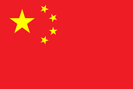
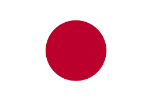
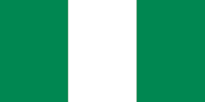

<html>
<head>
<title>
turism0
</title>
<link rel="stylesheet" href="formato.css">
<style>
table,th,td{border:1px solid black;}
</style>
</head>
</html>
<body>
<ul><font sinze="5">
<li>alemania</li>
<li>italia</li>
<li>francia</li>
<li>españa</li>
<li>inglaterra</li>
</ul>
<ul><font sinze="5">
<li>arabia saudita</li>
<li>china</li>
<li>corea del sur</li>
<li>japon</li>
<li>israel</li>
</ul>
<ul><font sinze="5">
<li>australia</li>
<li>nueva zelanda</li>
<li>fiyi</li>
<li>samoa americana</li>
<li>niue</li>
</ul>
<ul><font sinze="5">
<li>ghana</li>
<li>kenia</li>
<li>francia</li>
<li>nigeria</li>
<li>sudafrica</li>
</ul>
<ul><font sinze="5">
<li>mexico</li>
<li>argentina</li>
<li>peru</li>
<li>colombia</li>
<li>cuba</li>
</ul>
<table>
<tr>
<th>europa</th>
<th>asia</th>
<th>africa</th>
<th>america</th>
<th>oseania</th>
</tr>
<tr>
<td>alemania</td>
<td>japon</td>
<td>sudafrica</td>
<td>mexico</td>
<td>australia</td>
</tr>
<tr>
<td>inglaterra</td>
<td>israel</td>
<td>ghana</td>
<td>argentina</td>
<td>nueva zelanda</td>
</tr>
<tr>
<td>italia</td>
<td>corea del sur</td>
<td>kenia</td>
<td>peru</td>
<td>fiyi</td>
</tr>
<tr>
<td>francia</td>
<td>china</td>
<td>nigeria</td>
<td>colombia</td>
<td>samoa america</td>
</tr>
<tr>
<td>españa </td>
<td>arabia saudita</td>
<td>senegal</td>
<td>cuba</td>
<td>niue</td>
</tr>
</table>
video
<h1>
<video src="In The End -Linkin Park.mp4"/controls>
</h1>
<h1>
<span style="color:red">europa<span>
</h1>
<h2>
<span style="color:blue"><font size= "5" face="arial">alemania<span></font>
</h2>
<a target="_blank" href="https://es.wikipedia.org/wiki/Alemania">alemania</a>
<p>
<font size= "4" face="arial">Alemania es un país de Europa occidental con un paisaje de bosques, ríos, cadenas montañosas y playas en el mar del Norte.</font>
</p>


<h2>
<span style="color:blue"><font size= "5" face="arial">españa<span></font>
</h2>
<a target="_blank" href="https://es.wikipedia.org/wiki/Espa%C3%B1a">españa</a>
<p>
España, país de la península ibérica de Europa, incluye 17 regiones autónomas con diversas características geográficas y culturales.
</p>

<h2>
<span style="color:blue"><font size= "5" face="arial">inglaterra<span></font>
</h2>
<a target="_blank" href="https://es.wikipedia.org/wiki/Inglaterra">inglaterra</a>
<p>
Inglaterra, la cuna de Shakespeare y The Beatles, es un país de las Islas Británicas que limita con Escocia y Gales.
</p>

<h2>
<span style="color:blue"><font size= "5" face="arial">francia<span></font>
</h2>
<a target="_blank" href="https://es.wikipedia.org/wiki/Francia">francia</a>
<p>
Francia, en Europa Occidental, abarca ciudades medievales, villas alpinas y playas mediterráneas. París, su capital, es famosa por sus firmas de alta costura, los museos de arte clásico, como el Louvre, y monumentos como la Torre Eiffel.
</p>

<h2>
<span style="color:blue"><font size= "5" face="arial">italia<span></font>
</h2>
<a target="_blank" href="https://es.wikipedia.org/wiki/Italia">italia</a>
<p>
Italia, país europeo con una larga costa mediterránea, influyó considerablemente en la cultura y la cocina occidental. Su capital, Roma, es hogar del Vaticano, de ruinas antiguas y de obras de arte emblemáticas
</p>


<h1>
<span style="color:red">asia<span>
</h1>
<h2>
<span style="color:blue"><font size= "5" face="arial">arabia saudita<span></font>
</h2>
<a target="_blank" href="https://es.wikipedia.org/wiki/Arabia_Saudita">arabia saudita</a>
<p>
Arabia Saudita o Arabia Saudí, ​ oficialmente Reino de Arabia Saudita o Reino de Arabia Saudí​, es un país de Asia occidental, ubicado en la península arábiga —Oriente Próximo—, cuya forma de gobierno es la monarquía absoluta. Su capital y ciudad más poblada es Riad.
</p>

<h2>
 <span style="color:blue"><font size= "5" face="arial">china<span></font>
</h2>
<a target="_blank" href="https://es.wikipedia.org/wiki/Rep%C3%BAblica_Popular_China">china</a>
<p>
China es una nación muy poblada de Asia Oriental cuyos vastos paisajes abarcan praderas, desiertos, montañas, lagos, ríos y más de 14,000 km de costa
</p>

<h2>
 <span style="color:blue"><font size= "5" face="arial">corea del sur<span></font>
</h2>
<a target="_blank" href="https://es.wikipedia.org/wiki/Corea_del_Sur">corea del sur</a>
<p>
La República de Corea, comúnmente Corea del Sur​ es un Estado soberano de Asia Oriental, ubicado en la parte sur de la península de Corea
</p>

<h2>
 <span style="color:blue"><font size= "5" face="arial">japon<span></font>
</h2>
<a target="_blank" href="https://es.wikipedia.org/wiki/Jap%C3%B3n">japon</a>
<p>
Japón es una nación insular del océano Pacífico con densas ciudades, palacios imperiales, parques nacionales montañosos y miles de santuarios y templos.
</p>

<h2>
<span style="color:blue"><font size= "5" face="arial">israel<span></font>
</h2>
<a target="_blank" href="https://es.wikipedia.org/wiki/Israel">israel</a>
<p>
Israel es un país de Medio Oriente en el mar Mediterráneo, considerado la Tierra Santa bíblica según los judíos, los cristianos y los musulmanes. Sus sitios más sagrados están en Jerusalén.
</p>

<h1>
<span style="color:red">oceania<span>
</h1>
<h2>
<span style="color:blue"><font size= "5" face="arial">australia<span></font>
</h2>
<a target="_blank" href="https://es.wikipedia.org/wiki/Australia">australia</a>
<p>
Australia es un país rodeado por los océanos Índico y Pacífico.
</p>

<h2>
<span style="color:blue"><font size= "5" face="arial">nueva zelanda<span></font>
</h2>
<a target="_blank" href="https://es.wikipedia.org/wiki/Nueva_Zelanda">nueva zelanda</a>
<p>
Nueva Zelanda es un país en el suroeste del océano Pacífico, que comprende dos islas principales, ambas marcadas por los volcanes y la glaciación
</p>

<h2>
<span style="color:blue"><font size= "5" face="arial">fiyi<span></font>
</h2>
<a target="_blank" href="https://es.wikipedia.org/wiki/Fiyi">fiyi</a>
<p>
Fiyi, un país del Pacífico Sur, es un archipiélago de más de 300 islas.
</p>

<h2>
<span style="color:blue"><font size= "5" face="arial">samoa americana<span></font>
</h2>
<a target="_blank" href="https://es.wikipedia.org/wiki/Samoa_Americana">samoa americana</a>
<p>
Samoa Americana​ o Samoa Estadounidense​​ es uno de los catorce territorios no incorporados de Estados Unido
</p>

<h2>
<span style="color:blue"><font size= "5" face="arial">niue<span></font>
</h2>
<a target="_blank" href="https://es.wikipedia.org/wiki/Niue">niue</a>
<p>
Niue es un territorio insular en el océano Pacífico sur, conocido como la Roca de Polinesia.
</p>

<h1>
<span style="color:red">africa<span>
</h1>
<h2>
<span style="color:blue"><font size= "5" face="arial">sudafrica<span></font>
</h2>
<a target="_blank" href="https://es.wikipedia.org/wiki/Sud%C3%A1frica">sudafrica</a>
<p>
Sudáfrica es un país del extremo más meridional del continente africano que se caracteriza por sus numerosos ecosistemas distintos
</p>

<h2>
<span style="color:blue"><font size= "5" face="arial">nigeria<span></font>
</h2>
<a target="_blank" href="https://es.wikipedia.org/wiki/Nigeria">nigeria</a>
<p>
Nigeria, oficialmente República Federal de Nigeria​, ​ es un país de África occidental, ​ que limita con Níger al norte, con Chad en el nordeste, con Camerún en el este y con Benín en el oeste.​ Su costa sur está localizada en el Golfo de Guinea en el Océano Atlántico
</p>

<h2>
<span style="color:blue"><font size= "5" face="arial">kenia<span></font>
</h2>
<a target="_blank" href="https://es.wikipedia.org/wiki/Kenia">kenia</a>
<p>
Kenia es un país de África Oriental con una costa en el océano Índico. Su territorio abarca sabana, terrenos en lagos, el espectacular Gran Valle del Rift y zonas montañosas altas
</p>

<h2>
<span style="color:blue"><font size= "5" face="arial">ghana<span></font>
</h2>
<a target="_blank" href="https://es.wikipedia.org/wiki/Ghana">ghana</a>
<p>
Ghana es un país del golfo de Guinea en África Occidental, famoso por su diversa fauna, sus fuertes antiguos y las playas aisladas, como las de Busua
</p>

<h2>
<span style="color:blue"><font size= "5" face="arial">senegal<span></font>
</h2>
<a target="_blank" href="https://es.wikipedia.org/wiki/Senegal">senegal</a>
<p>
Senegal es un país de la costa oeste de África con un rico legado colonial francés y muchas atracciones naturales
</p>

<h1>
<span style="color:red">america<span>
</h1>
<h2>
<span style="color:blue"><font size= "5" face="arial">mexico<span></font>
</h2>
<a target="_blank" href="https://es.wikipedia.org/wiki/Mexicanos">mexico</a>
<p>
México es un país entre los Estados Unidos y América Central, conocido por las playas en el Pacífico y el golfo de México, y su diverso paisaje de montañas, desiertos y selvas
</p>

<h2>
<span style="color:blue"><font size= "5" face="arial">argentina<span></font>
</h2>
<a target="_blank" href="https://es.wikipedia.org/wiki/Argentina">argentina</a>
<p>
Argentina es un país sudamericano de gran envergadura con un terreno que incluye las montañas de los Andes, lagos glaciales y praderas en las Pampas, la tierra tradicional de pastoreo de su famoso ganado
</p>

<h2>
<span style="color:blue"><font size= "5" face="arial">peru<span></font>
</h2>
<a target="_blank" href="https://es.wikipedia.org/wiki/Per%C3%BA">peru</a>
<p>
Perú es un país de Sudamérica que abarca una sección del bosque del Amazonas y Machu Picchu, una antigua ciudad inca en las alturas de los Andes
</p>

<h2>
<span style="color:blue"><font size= "5" face="arial">colombia<span></font>
</h2>
<a target="_blank" href="https://es.wikipedia.org/wiki/Colombia">colombia</a>
<p>
Colombia es un país del extremo norte de Sudamérica. Su paisaje cuenta con bosques tropicales, las montañas de los Andes y varias plantaciones de café
</p>

<h2>
<span style="color:blue"><font size= "5" face="arial">cuba<span></font>
</h2>
<a target="_blank" href="https://es.wikipedia.org/wiki/Cuba">cuba</a>
<p>
Cuba, oficialmente República de Cuba, ​ es un país soberano insular, asentado en las Antillas del mar Caribe.
</p>

<form>
<label for="nombre">nombre</label>
<input type="text" id="nombre" name="nombre">
<br><br>
<label for="apellido">apelliado</label>
<input type="text" id="apellido" name="apellido">
<label for="comentario">comentario</label>
<textarea cols="50" rows="10" id="comentario" name="comentario"></textarea>
</form>
<button type="button">boton</button>
<button type="reset">borrar</button>
<button type="submit">enviar</button>
</body>
</html>
